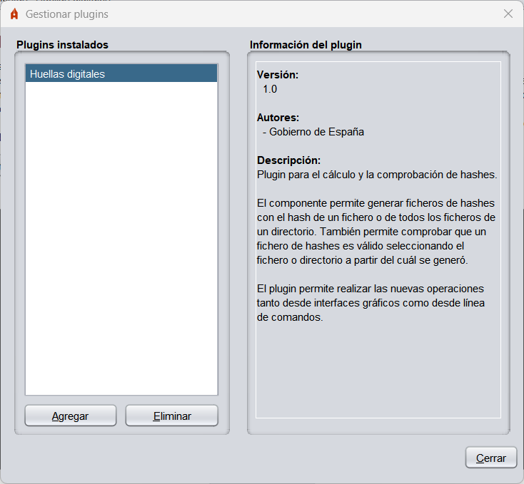

Autofirma integra un sistema sencillo de plugins que permite a los usuarios integrar en sus procesos de firma plugins desarrollados por ellos mismos o por terceros. Estos plugins permiten integrar un preproceso de los datos antes de firmar, un postproceso después de la firma y distintas operaciones desligadas del proceso de firma pero que pueden tener como entrada los datos cargados por el usuario, la firma generada, los certificados utilizados para firmar o los propios certificados contenidos en las firmas. Estos procesos sólo actúan sobre las operaciones de firma y firma masiva realizadas a través de la interfaz de Autofirma. No aplican a las firmas solicitadas desde un navegador web o a través de línea de comandos.
NOTA: Algunas funcionalidades anteriormente integradas en Autofirma, como el cálculo y la comprobación de hashes, se distribuyen ahora en forma de plugins. Para tener acceso a estas funciones desde la interfaz gráfica de Autofirma, el menú contextual del sistema operativo o línea de comandos será necesario instalar estos plugins.
Para gestionar los plugins instalados en Autofirma, acceda al panel de gestión a través de la opción "Herramientas" → "Gestionar plugins" en la barra de menú de la aplicación. Desde este panel podrá instalar, desinstalar, configurar y consultar la información de los plugins.

En este recuadro se muestra un listado con los plugins instalados actualmente en Autofirma. Puede pulsar el botón "Agregar" de la parte inferior del listado para instalar un nuevo plugin o al botón "Eliminar" para desinstalar el plugin seleccionado en el listado. La instalación y desinstalación de plugins tiene efecto inmediato. Al seleccionar un plugin del listado, se mostrará la información del mismo en el panel "Información del plugin".
En este panel se muestra la información del plugin seleccionado en el listado "Plugins instalados". Esta información cuenta con el número de versión del plugin, los autores, la información de contacto y una descripción. Algunos de estos datos pueden omitirse si el plugin no informa de ellos.
Opcionalmente, si el plugin lo permite, puede aparecer un botón "Configurar" en la zona inferior del panel. Este botón abre el diálogo de configuración definido por el propio plugin. Si un plugin no admite configuración, no aparecerá este botón.
Los plugins pueden definir ciertos permisos y realizar diversas tareas para su instalación y desinstalación. Es posible que algunos plugins no tengan efecto hasta que se reinicie la aplicaci√≥n.